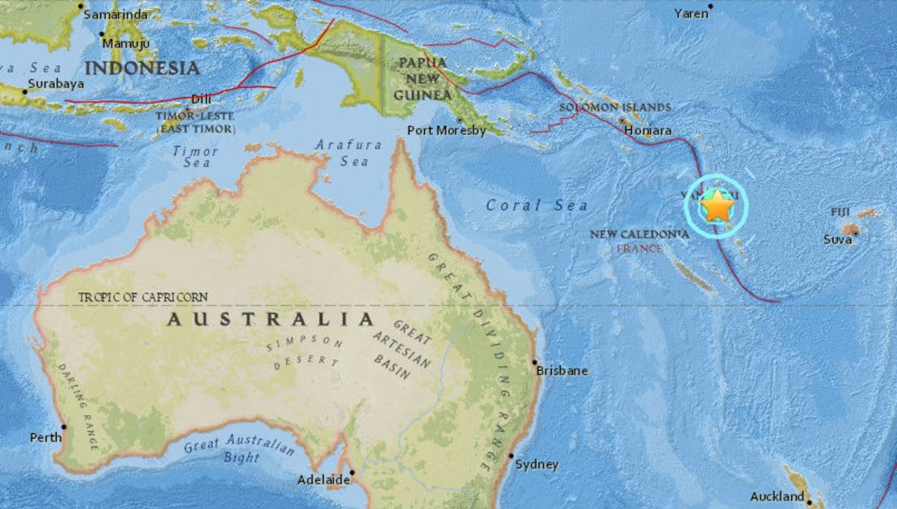
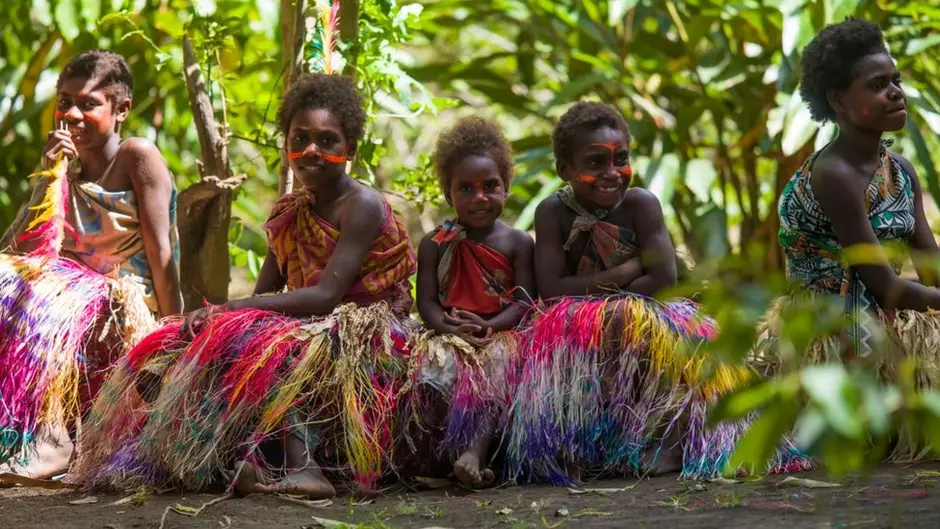
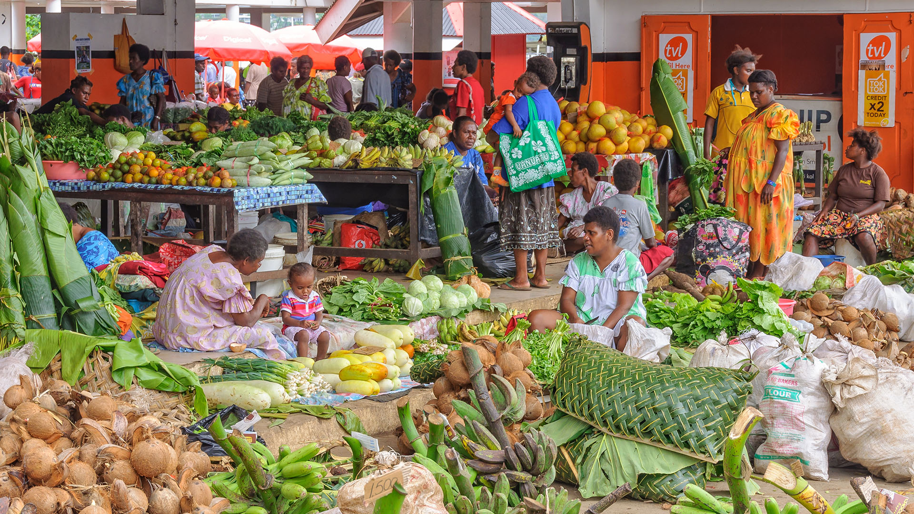
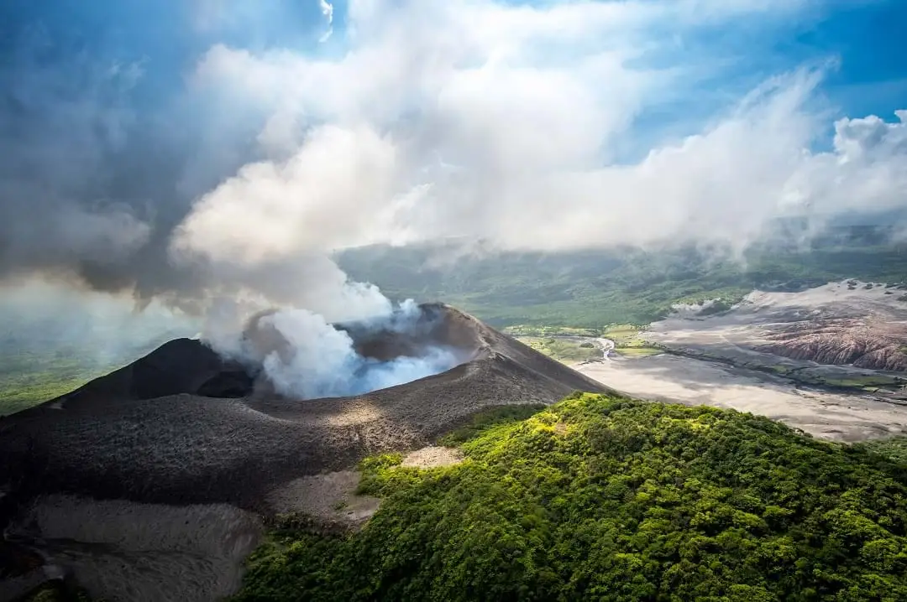
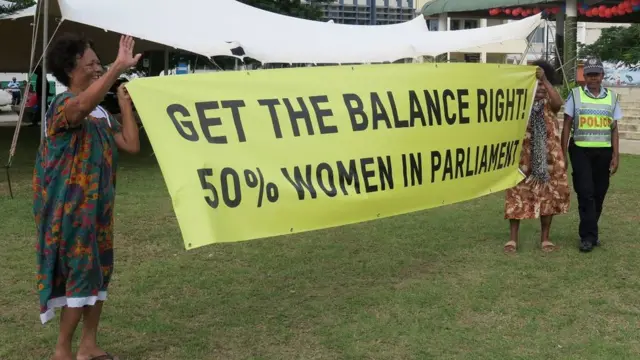
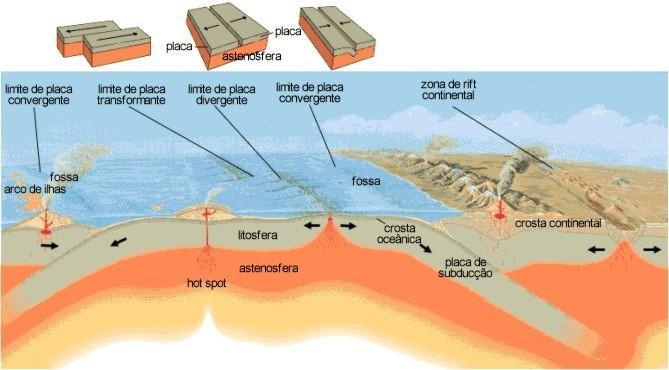
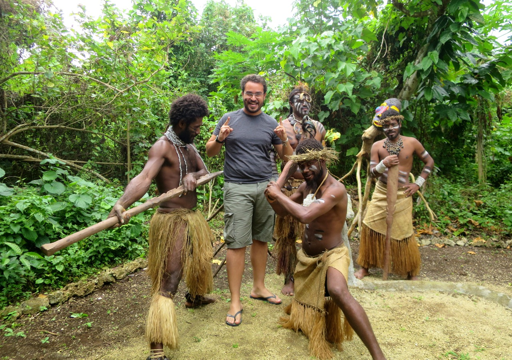

Visão geral
Vanuatu, também conhecido como República de Vanuatu ou pelo seu nome colonial Novas Hébridas, é um país da Oceania. Seu nome provém das diversas línguas faladas por lá, traduzindo-se em “Nossa Terra” e “Terra Permanente”, sendo assim um dos aspectos mais importantes da identidade nacional dos Vanuatuenses.

Localização
Vanuatu é um país localizado no sudoeste do Oceano Pacífico, situado na latitude de 13° S à 23° S e na longitude 166° L à 172° L. Consiste num arquipélago de 13 ilhas principais e outras 70 ilhas menores. Tem uma área total de aproximadamente 12.274 km² e não possui fronteiras terrestres

População
A população total de Vanuatu é de 320.409 habitantes (Verificar gráfico) e cerca de 95% dela é formada por indígenas conhecidos como “Ni-Vanuatu” e os outros 5% da população inclui pessoas de diferentes nacionalidades. Desse total, mais de 20% vivem nas duas grandes cidades de Porto Vila e Luganville, enquanto 75% da população vive em áreas rurais.

Economia
Moeda Vatu Principais setores industriais: Turismo, agricultura, centro financeiro foffshore (jurisdição, geralmente um país ou território, que oferece serviços financeiros para não residentes de forma desproporcional ao tamanho da sua própria economia nacional), pesca e silvicultura (ciência e arte de cultivar e manejar florestas, abrangendo o plantio, crescimento, manejo e conservação de árvores para atender às necessidades do mercado e da sociedade). Suas principais culturas ao longo de sua história foram algodão, milho, café, cacau e coco, todavia nem tudo são flores: Vanuatu enfrenta dificuldades econômicas devido aos custos de transporte, a infraestrutura subdesenvolvida e os danos causados por ciclones, por isso, Vanuatu estar trabalhando para complementar a agricultura em larga escala com setores extrativos, industriais e de serviços mais fortes, afinal a sua indústria e manufatura atual contribuem com apenas 5 a 9% do PIB.

Origens
Vanuatu é habitada há mais de 4.000 anos. Evidências arqueológicas indicam que, por volta de 1300 a.C. as ilhas no norte de Vanuatu foram colonizadas por povos da cultura Lapita, vindos das ilhas melanésias a oeste e, desde aquele momento, houve onda sucessivas de imigrantes. Por volta de 1.200 a.C, uma sociedade altamente estratificada desenvolveu-se no centro de Vanuatu com a chegada do grande chefe Roy Mata, também chamado de Roymata. A chegada dos europeus aconteceu em maio de 1606 pelo capitão explorador português Pedro Fernandez de Quirós. Foi Cook que mapeou o arquipélago e nomeou de Novas Hébridas. Logo após, missionários franceses e britânicos junto de comerciantes começaram a levar moradores locais como escravos para trabalhar nas plantações de cana-de-açúcar em Queensland, Austrália. A maioria dessas pessoas nunca mais voltou para casa. Os britânicos e os franceses, que colonizaram em conjunto as Novas Hébridas no século XIX, concordaram, em 1906, com um condomínio anglo-francês (Um condomínio, no direito internacional, é um território político no qual duas ou mais potências soberanas formalmente concordam em exercer os seus direitos sobre a terra conjuntamente, sem dividi-lo em zonas para cada um). Esse estilo de governo pendurou até a independência do país em 1980, momento que também o país parou de se chamar Novas Hébridas para se chamar Vanuatu. Essa independência foi acordada em uma conferência em Paris, em 1977, com a presença de representantes das três nações e, dois anos após, eleições foram realizadas e uma nova constituição entrou em vigor.

Característica geofísicas
Vanuatu é um arquipélago de ilhas no Pacífico Sul, super interessante do ponto de vista geofísico. A região tem muitas características marcantes que fazem dela um lugar único.
Localização e forma do território
Vanuatu é formado por cerca de 80 ilhas espalhadas entre a Austrália e Fiji, e está bem no centro do chamado "Cinturão de Fogo do Pacífico". Esse é um lugar onde várias placas tectônicas se encontram, o que faz com que o território seja bem ativo em termos de geologia.
Vulcões ativos
Uma das coisas mais notáveis de Vanuatu é que ele tem vários vulcões ativos. Isso acontece porque o país está bem em cima de uma zona de intenso movimento das placas tectônicas.
Terremotos
Com toda essa atividade tectônica, Vanuatu também vive com a presença constante de terremotos.
Clima tropical e ciclones
O clima é tipicamente tropical, quente e úmido, o que é ótimo para a vegetação e vida animal do local. Mas, como o arquipélago está em uma região onde ciclones tropicais são comuns, a temporada de tempestades, que vai de novembro a abril, pode ser bem intensa.
Recursos naturais
Vanuatu tem uma rica biodiversidade, tanto marinha quanto terrestre. As suas águas são cercadas por recifes de corais, e as florestas das ilhas abrigam uma grande variedade de plantas e árvores.
Terreno montanhoso
Muitas das ilhas têm terrenos bastante montanhosos, com picos vulcânicos que podem chegar a mais de 1.800 metros de altura, como o Monte Tabwémasana na ilha de Espiritu Santo.
Ilhas baixas e recifes de coral
Além das montanhas, algumas ilhas são bem mais planas e têm belas praias, com recifes de corais ao redor. Esses recifes são ótimos para a vida marinha e também atraem turistas de todo o mundo para praticar esportes aquáticos, como mergulho.

Característica políticas
Sistema de Governo
Vanuatu é uma república parlamentar com uma democracia multipartidária. Isso significa que o povo escolhe seus representantes, e esses representantes, por meio de um sistema parlamentar, formam o governo.
Parlamento e partidos políticos
O Parlamento Nacional de Vanuatu é unicameral, ou seja, possui uma única câmara. Ele tem 52 cadeiras, e os membros são eleitos por voto popular, com mandatos de 4 anos. O sistema eleitoral de Vanuatu é baseado na representação proporcional, o que significa que diferentes partidos podem ter representação conforme a porcentagem de votos que recebem.
Cultura política e estabilidade
Apesar de ser uma democracia, a política em Vanuatu tende a ser muito volátil e fragmentada. Mudanças frequentes de governo, corrupção e disputas internas são comuns. Isso se deve, em parte, à grande quantidade de pequenos partidos políticos e à tendência dos políticos de formar coalizões temporárias, que nem sempre são estáveis.
Vanuatu também tem uma forte tradição de descentralização, com muita autonomia nas ilhas menores, o que reflete o caráter cultural e social de um país que, apesar de ser um único estado, é composto por muitas comunidades e culturas locais.
Religião e Política
A maioria da população de Vanuatu é cristã, e a religião tem uma presença importante na vida política e social. Embora o país tenha um sistema de separação entre igreja e estado, a religião influencia bastante os valores e atitudes dos eleitores e dos líderes políticos. Muitos políticos, por exemplo, buscam apoio nas comunidades religiosas.
Característica culturais – A vida em Vanuatu é caracterizada especialmente pelo contato com a natureza e a valorização dos bens comunitários e coisas como o dinheiro não são consideradas importantes. Sua cultura é rica em tradições e crenças ancestrais, como, por exemplo, a existência de cerimônias e danças para a comemoração de nascimentos, casamentos, colheitas e outras ocasiões importantes. O povo de Vanuatu é extremamente ligado a sua própria cultura, sendo que 92% do povo fala as línguas nativas, mesmo tendo línguas europeias como oficiais. A grande maioria tem uma compreensão acerca dos ciclos de plantio, da história de seus ancestrais e e da importância da natureza, ou seja, a terra para eles a mais que um recurso econômico, mas também o vínculo com o passado. Em muitas das ilhas os homens se reúnem todas as noites em seus nakamal, as “casas dos homens”, locais onde podem beber kava, uma bebida tradicional da Polinésia e Melanésia conhecida pelos seus efeitos relaxantes e sedativos, além de se comunicar com seus espíritos ancestrais, cujos ossos normalmente são enterrados nas proximidades das casas. Isso é feito a partir de pedras mágicas. As cerimônias normalmente envolvem uma troca de alimentos, como a kava, aves, porcos, frango e taro e inhame, junto de banquetes. Um dos pratos cerimoniais nacionais é o laplap, pudim feito de raízes raladas ou bananas-da-terra misturadas com leito de coco e, às vezes, verduras e carne envolta em folhas e assado por horas em um forno de barro.

Processos Endógenos
Os processos endógenos são aqueles que ocorrem dentro da Terra, influenciando a sua estrutura e formando características geológicas que podemos observar na superfície.
Principais processos endógenos:
Tectonismo (Movimento das Placas Tectônicas)
A tectônica de placas é um dos principais processos endógenos que moldam a crosta terrestre. A crosta terrestre é composta por várias grandes placas que flutuam sobre o manto, uma camada do interior da Terra.
Vulcanismo
Os vulcões são formados pela atividade de magma proveniente do interior da Terra. O vulcanismo ocorre quando o magma, ou lava, sobe até a superfície devido à pressão do interior da Terra. Existem diferentes tipos de vulcões e formas de atividade vulcânica, mas o princípio é sempre o mesmo: a crosta se rompe, permitindo que o magma se libere.
Orogenia (Formação de Cadeias Montanhosas)
A orogenia é o processo de formação de montanhas, causado pelo empurrão das placas tectônicas umas contra as outras. Esse processo ocorre quando duas placas colidem e a crosta é comprimida, causando o levantamento da terra. É o que forma cadeias montanhosas ao longo de milhões de anos.
Metamorfismo
O metamorfismo ocorre quando as rochas pré-existentes (ígneas, sedimentares ou outras rochas metamórficas) são submetidas a condições extremas de temperatura e pressão dentro da Terra. Isso pode resultar na transformação de uma rocha em outro tipo de rocha, como uma rocha ígnea se transformando em uma rocha metamórfica.
Atividade Sísmica (Terremotos)
A atividade sísmica é um reflexo dos movimentos das placas tectônicas. Vanuatu é particularmente suscetível a terremotos devido à interação das placas tectônicas na região. Quando as placas se movem, podem liberar enormes quantidades de energia, que são sentidas como terremotos na superfície.

Cultura
Diversidade Linguística
Vanuatu tem uma das maiores densidades linguísticas do mundo. Existem mais de 100 línguas indígenas faladas no país.
Sociedades Tradicionais
A sociedade ni-van (como os habitantes locais se autodenominam) é fortemente baseada em estruturas tribais e sistemas de chefia. Os costumes tradicionais, conhecidos como kastom, regulam muitos aspectos da vida cotidiana, como casamento, propriedade de terras e resolução de conflitos.
Cerimônias e Rituais
Muitas ilhas têm rituais iniciáticos e cerimônias elaboradas, como a dança Rom (em Ambrym) e o famoso salto com cipó (land diving) em Pentecost, considerado precursor do bungee jump. Cerimônias estão ligadas ao status social, espiritualidade e à fertilidade da terra.
